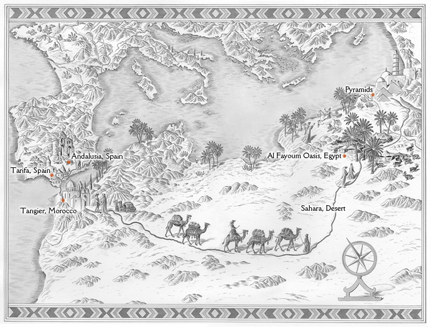

Map of Santiago's Travels
 Map image provided by Romina PerezAndalusia, Spain
This is where the story begins, with Santiago traveling to many places in Andalusia as a Shepherd. In addition, he meets a king and a gypsy near here, both who explain to him about his reoccurring dream. The gypsy tells him there will be a treasure at the Egyptian Pyramids for him. The king tells him about his personal legend and to follow omens to find his treasure. At the end, Santiago realizes that his treasure is actually at the church in the beginning of the story so he comes back.
Tarifa, Spain
This is Santiago's final stop before leaving on his quest for his personal legend.
Tangier, Morocco
During his journey, Santiago worked for over a year for a crystal merchant because he was robbed of his money. During this time, he learned many things from the crystal merchant. He was very hesitant about going on with his quest, but he ends up continuing.
Sahara Desert
Santiago travels across the Sahara Desert with a caravan: On this trip, he meets an Englishman who tells him about alchemy. Santiago becomes very interested in this. Also, because of tribal wars, the caravan stopped at an Oasis.
Al Fayoum Oasis, Egypt
This is the oasis where Santiago meets his future wife, Fatima. He falls in love with her quickly. In addition, Santiago read the omens correctly here, predicting an attack and saving many lives by telling the tribal chieftain. In addition, he meets the alchemist here and he sets off for the pyramids with him.
Pyramids
He arrives at the pyramids, thinking this is where his treasure is. However, he soon realizes he treasure is indeed at the church.
Back to top